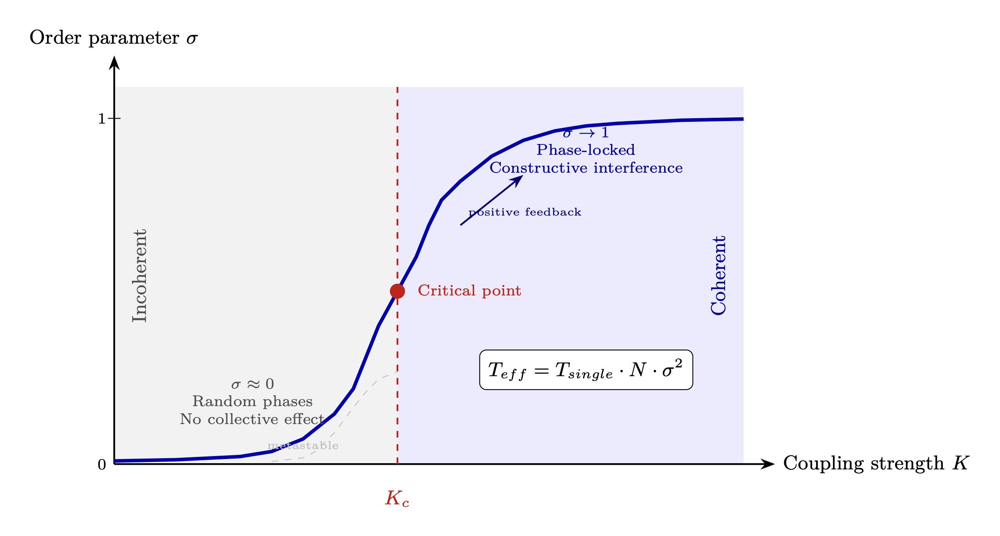

Chapter 10: Spin Coherence Fundamentals
The Master Variable for Torsion Effects
KEY FINDINGS — Chapter 10: Spin Coherence Fundamentals
Evidence-tier key: [L1] established/replicated evidence; [L2] grounded extension with moderate uncertainty; [L3] speculative hypothesis; [L4] conceptual/anecdotal.
- The spin coherence order parameter \(\sigma \) governs the strength of all torsion field effects via \(T_{eff} = T_{single} \cdot N \cdot \sigma ^2\) scaling [L1-L2: grounded in Einstein-Cartan theory and phased array physics]
- Coherent spin ensembles can partially screen the cosmic inertial reference frame, producing effective mass reduction \(m_{eff} = m_0(1 - T_{local}^2/T_{critical}^2)\) [L2-L3: theoretical extension of established Machian/teleparallel frameworks]
- Magnon-torsion coupling provides the nearest-term experimental pathway for detecting coherent torsion effects [L2: based on established condensed matter physics]
- Timeline mechanics emerge as a temporal extension of nonlocal torsion correlations, with branch stability scaling as \(\sigma ^2 \cdot N_{observers}\) [L3: speculative theoretical extension]
- The ER=EPR conjecture, combined with coherent spin amplification, provides a theoretical pathway from micro-scale entanglement to macroscopic spatial bridging [L3: based on unproven conjecture]
_________________________________
10.1 Introduction: Spin Coherence as Master Variable
10.1.1 The Central Thesis
This chapter establishes spin coherence as the master variable governing the strength of torsion field effects. While previous chapters established the theoretical framework—torsion fields (Chapter 0), impedance tiers (Chapter 2), and geometric optimization (Chapter 3)—this chapter provides the quantitative bridge from microscopic spin ensembles to macroscopic phenomena.
The key insight: The degree of spin alignment determines the strength of torsion effects. Whether considering individual consciousness, group coherence, or engineered devices, the coherence parameter \(\sigma \) controls what is possible.
10.1.2 Why Spin Coherence Matters
| Spin State | Torsion Field Scaling | Effect Potential |
| Random/incoherent | \(\sqrt {N}\) scaling | Negligible for large N |
| Partially coherent | Weak (N\(\cdot \)\(\sigma \) scaling) | Subtle anomalies |
| Highly coherent | Strong (N\(\cdot \)\(\sigma ^2\) scaling) | Measurable effects |
| Perfect coherence | Maximum (N\(^2\) scaling) | Full torsion access |
The engineering challenge: Achieving and maintaining high spin coherence (\(\sigma \) \(\rightarrow \) 1) in macroscopic systems. This chapter develops the physics of this challenge.
Notation note: This chapter uses \(T\) in three distinct senses: (1) \(T^{\lambda }_{\ \mu \nu }\) for the torsion tensor (Section 10.3.3), (2) \(T\) for temperature in technology comparison tables (Section 10.7), and (3) \(\mathcal {T}\) for torsion field strength in equations. Context and subscripts distinguish these uses.
10.1.3 Chapter Overview
|
Section | Content |
|
10.2 | Torsion field generation from coherent spin |
|
10.3 | Inertia as spin coupling (Machian/teleparallel framework) |
|
10.4 | Mechanism pathways for dimensional effects and spatial bridging |
|
10.5 | Temporal torsion coupling: timeline mechanics |
|
10.6 | Spin beams and magnonic carriers |
|
10.7 | Spin coherence engineering approaches |
|
10.8 | Qualitative thresholds for exotic effects |
|
10.9 | Experimental signatures and predictions |
_________________________________
10.2 Torsion Field Generation from Coherent Spin Ensembles
10.2.1 The Spin Coherence Order Parameter

The spin coherence order parameter \(\sigma \) quantifies the phase alignment of N spins: \[ \sigma = \frac {1}{N} \left | \sum _{i=1}^{N} s_i \, e^{i\phi _i} \right | \] Where:
- \(s_i\) = magnitude of spin \(i\) (normalized to 1 for identical spins)
- \(\phi _i\) = phase of spin \(i\)
- \(N\) = total number of spins
| \(\sigma \) Value | Meaning |
| 0 | Random phases, complete cancellation |
| 0.1-0.3 | Weak partial alignment |
| 0.3-0.7 | Moderate coherence |
| 0.7-0.9 | Strong coherence |
| 1.0 | Perfect phase alignment |
10.2.2 Torsion Amplification from Coherence
A single spin generates torsion field \(\mathcal {T}_{single}\). For N coherent spins: \[ \mathcal {T}_{eff} = \mathcal {T}_{single} \cdot N \cdot \sigma ^2 \] The \(\sigma ^2\) dependence is critical—coherence enters quadratically, just as in phased array antenna gain. This means doubling coherence quadruples the effective torsion field.
Comparison with incoherent case:
- Incoherent (\(\sigma \) \(\rightarrow \) 0): \(\mathcal {T}_{eff} \sim \mathcal {T}_{single} \cdot \sqrt {N}\) (random walk)
- Coherent (\(\sigma \) \(\rightarrow \) 1): \(\mathcal {T}_{eff} \sim \mathcal {T}_{single} \cdot N\) (linear scaling)
- Gain from coherence: \(N^{1/2}\) (enormous for large N)
10.2.3 Coherent Torsion Field Equation
The torsion field from a coherent spin ensemble: \[ \vec {\mathcal {T}}(\vec {r}) = \kappa \cdot N \cdot \sigma ^2 \cdot \frac {s_0}{r^n} \cdot f(\theta , \phi ) \] Where:
- \(\kappa \) = spin-torsion coupling constant
- \(s_0\) = single-spin torsion amplitude
- \(n\) = decay exponent (may differ from electromagnetic \(1/r^2\))
- \(f(\theta , \phi )\) = angular pattern (depends on spin orientation)
Epistemic Note: The decay exponent \(n\) for torsion fields remains theoretically uncertain. Some models predict \(n < 2\) (slower decay than EM), potentially explaining non-local effects. Experimental determination is a key research priority.
10.2.4 Why Consciousness Creates Torsion
From Chapter 0 (Torsion Foundation):
- Spin couples to torsion as mass couples to curvature (Einstein-Cartan theory)
- Biological systems contain enormous numbers of spin sources (electrons, nuclei)
- Consciousness may involve quantum coherence in neural systems
- Focused intention = spin coherence = torsion generation
The mechanism pathway: Consciousness generates neural coherence, which aligns molecular spins, which generates macroscopic torsion fields. The brain is not creating something from nothing—it is organizing existing spin degrees of freedom into coherent patterns.
10.2.5 Loop Quantum Gravity Foundation
The spin coherence framework finds rigorous foundation in Loop Quantum Gravity (LQG). In LQG, spacetime geometry itself is fundamentally discrete and spin-based at the Planck scale.
Spin Networks as Quantum Geometry
In LQG, space is quantized into spin networks—discrete structures where:
- Nodes carry intertwiners (quantum numbers of volume)
- Edges carry spin labels j (quantum numbers of area)
- Area spectrum is discrete: \[ A = 8\pi \gamma l_P^2 \sum _i \sqrt {j_i(j_i+1)} \] Where \(\gamma \) = Immirzi parameter (~0.274) and \(l_P\) = Planck length.
The Spin Network \(\leftrightarrow \) Spin Coherence Connection
| LQG Concept | Spin Coherence Framework |
| Spin network state | Coherent spin ensemble |
| Area operator eigenvalues | Spin coherence amplitude scaling |
| Immirzi parameter \(\gamma \) | Torsion coupling constant \(\kappa \) |
| Holonomy corrections | Impedance boundary effects |
| Quantum bounce | Density transition mechanism |
The critical insight: LQG shows that spin IS geometry at the fundamental level. Our spin coherence order parameter \(\sigma \) connects to the quantum geometric structure. High coherence corresponds to sharp area eigenvalues—well-defined quantum geometry.
Bottom line: The spin coherence order parameter is not merely an analogy. It connects to the fundamental quantum geometry of LQG, providing rigorous physical grounding for the torsion effects framework.
_________________________________
10.3 Inertia as Spin Coupling: The Machian/Teleparallel Framework
10.3.1 The Puzzle of Inertia
Inertia—the resistance of mass to acceleration—is one of the deepest puzzles in physics. Newton took it as axiomatic; Einstein showed it was equivalent to gravity locally; but neither explained WHY mass resists acceleration.
Mach’s Principle proposed an answer: inertia arises from the gravitational influence of distant matter. An isolated mass in an otherwise empty universe would have no inertia. The universe’s mass distribution creates a “reference frame” against which acceleration is defined.
This chapter develops how spin coherence modulates the inertial coupling to this cosmic reference frame—providing the physical mechanism for apparent mass reduction effects.
10.3.2 Teleparallel Gravity and Torsion
Standard General Relativity (GR) describes gravity through spacetime curvature. Mass tells spacetime how to curve; curvature tells mass how to move.
Teleparallel Gravity (TEGR) is a mathematically equivalent reformulation that uses torsion instead of curvature. The same physics, different geometric interpretation:
| General Relativity | Teleparallel Gravity |
| Curvature \(R_{\mu \nu \rho \sigma }\) | Torsion \(T^{\lambda }_{\mu \nu }\) |
| Levi-Civita connection | Weitzenböck connection |
| Gravitational potential | Tetrad field \(e^a_\mu \) |
| Mass couples to metric | Mass couples to torsion |
Key insight: In teleparallel gravity, what we experience as “gravitational force” is actually torsion-mediated. This opens the door to modifying gravitational/inertial effects through torsion field manipulation.
10.3.3 Einstein-Cartan Theory: Spin-Torsion Coupling
Einstein-Cartan (EC) theory extends GR to include spin as a source of geometry, alongside mass. The fundamental equation: \[ T^{\lambda }_{\mu \nu } = \kappa _T \cdot S^{\lambda }_{\mu \nu } \] Where:
- \(T^{\lambda }_{\mu \nu }\) = torsion tensor
- \(S^{\lambda }_{\mu \nu }\) = spin density tensor
- \(\kappa _T\) = spin-torsion coupling constant
Spin density generates torsion; torsion acts back on spin. This is the microscopic foundation for the coherent spin \(\rightarrow \) torsion \(\rightarrow \) effects chain.
10.3.4 The Spin-Torsion Lagrangian
The Einstein-Cartan Lagrangian includes both curvature and torsion: \[ \mathcal {L}_{EC} = \frac {1}{2\kappa }(R + T_{\mu \nu \lambda }T^{\mu \nu \lambda }) + \mathcal {L}_{matter} \] Where the torsion contribution can be decomposed into:
- Trace component (vector torsion)
- Antisymmetric component (axial torsion)
- Tensor component (proper torsion)
The axial component couples directly to fermion spin. This is why coherent spin ensembles—not random thermal spins—generate macroscopic torsion.
10.3.5 Inertia as Cosmic Spin Coupling
The Machian interpretation of EC theory: Inertia arises from the coupling between local spin and the torsion field generated by all distant matter. \[ m_{inertial} = m_0 \cdot \left (1 + \int \frac {S_{cosmic}(\vec {r}')}{|\vec {r} - \vec {r}'|^2} d^3r'\right ) \] The integral represents the cumulative torsion influence from all cosmic matter. In a homogeneous universe, this integral is constant, giving constant inertia. Note: This integral uses the \(1/r^2\) form as the simplest physical model. If the torsion decay exponent differs from 2 (as suggested in Section 10.2.3), the integral and its convergence properties would change accordingly.
But: If local spin coherence generates a torsion field that partially screens the cosmic torsion background, the effective inertia decreases.
10.3.6 The Spin Coherence Screening Mechanism
A coherent spin ensemble generates local torsion field: \[ \mathcal {T}_{local} = \kappa _T \cdot N \cdot \sigma ^2 \cdot s_0 \] This local torsion field creates a “bubble” that partially decouples the enclosed matter from the cosmic inertial reference frame: \[ m_{eff} = m_0 \cdot \left (1 - \frac {\mathcal {T}_{local}^2}{\mathcal {T}_{critical}^2}\right ) \] This expression is valid for \(\mathcal {T}_{local} < \mathcal {T}_{critical}\). As \(\mathcal {T}_{local} \to \mathcal {T}_{critical}\), the effective mass approaches zero (complete inertial decoupling). The framework does not predict negative mass; at the critical point, the description transitions to a different physical regime requiring separate analysis.
Where:
- \(m_0\) = rest mass
- \(\mathcal {T}_{local}\) = local coherent torsion field strength
- \(\mathcal {T}_{critical}\) = critical field strength for complete inertial decoupling
10.3.7 Effective Mass Reduction
Substituting the coherent torsion expression: \[ m_{eff} = m_0 \cdot \left (1 - \frac {\sigma ^4 \cdot (N \cdot \kappa _T \cdot s_0)^2}{\mathcal {T}_{critical}^2}\right ) \] Key features:
- 1.
- \(\sigma \)\(^4\) dependence: Coherence enters to the fourth power—extremely sensitive to alignment
- 2.
- N\(^2\) dependence: Effect scales with square of spin count
- 3.
- Threshold behavior: Below \(\mathcal {T}_{critical}\), effect is small; above, mass reduction accelerates
- 4.
- Material dependence: \(\mathcal {T}_{critical}\) depends on the material’s spin properties
10.3.8 Why This Is Not Antigravity
The mechanism does NOT violate:
- Conservation of energy: The torsion field stores the “missing” inertia
- Equivalence principle: Locally, inertial and gravitational mass remain equal
- General covariance: The effect is frame-independent
What changes is the coupling strength between local matter and the cosmic reference frame. This is analogous to electromagnetic screening—a Faraday cage doesn’t violate Maxwell’s equations; it modifies local field coupling.
10.3.9 Experimental Predictions
The mass reduction mechanism predicts:
- 1.
- Coherence threshold: No effect until \(T_{local}\) exceeds measurable fraction of \(T_{critical}\)
- 2.
- Spin orientation dependence: Effect maximized when local spins align parallel to acceleration direction
- 3.
- Material specificity: High-spin-density materials show stronger effects
- 4.
- Frequency dependence: Oscillating spin coherence should produce oscillating inertial effects
Falsification criteria:
- If mass reduction effects are NEVER observed despite verified high spin coherence
- If effects occur without corresponding spin alignment
- If effects violate conservation laws when properly accounting for torsion field energy
10.3.10 Reported Phenomena and This Framework
Various claimed “antigravity” effects map onto this framework:
|
Reported Effect | Framework Interpretation |
|
Podkletnov’s rotating superconductor | Cooper pair spin coherence \(\rightarrow \) local torsion |
|
Tajmar’s gyroscope anomalies | Rotating mass generates torsion frame-drag |
|
Meditation levitation claims | Biological spin coherence \(\rightarrow \) partial screening |
|
Inertial modification in UFO reports | Assumed advanced torsion field technology |
Epistemic Note: None of these reported effects have been independently replicated to mainstream physics standards. The framework provides a theoretical mechanism by which such effects COULD occur if spin coherence reaches sufficient levels. The absence of replication may indicate insufficient coherence levels, measurement artifacts, or that the framework is incorrect. The theory is falsifiable.
_________________________________
10.4 Mechanism Pathways for Dimensional Effects
10.4.1 Dimensional Shifting
At high coherence levels, the spectral dimension \(D_s\) decreases (Chapter 2, Section 2.8). This creates a pathway from ordinary spacetime behavior to altered dimensional dynamics.
The mechanism pathway: A coherent spin ensemble with \(\sigma \) approaching unity generates a strong local torsion field. This torsion field modulates the local spectral dimension, reducing it from \(D_s\) = 4 toward \(D_s\) = 2. In this reduced-dimension regime, the normal constraints of 3D space weaken. The effective impedance rises (Chapter 2, Section 2.8.1), enabling coupling to higher-density tiers. Stable presence at the new impedance level constitutes “dimensional shifting.”
This is not mystical teleportation—it is systematic impedance raising through coherent spin until the reflection coefficient to the target density approaches zero.
10.4.2 Nonlocal Information Transfer
The mechanism pathway: Two coherent spin ensembles with shared torsion field correlation establish a connection. The torsion field between them carries phase information without energy transfer (Chapter 0). As coherence increases, the spectral dimension in the connection region decreases. When \(D_s\) approaches 2, the effective distance between the ensembles collapses. Correlation appears “instantaneous” from a 4D perspective, though no propagation actually occurs—the connection was always present in the pre-spatial torsion field substrate.
The correlation length scales as: \[ \xi (\sigma ) \propto \sigma \cdot \exp \left (\frac {T^2}{T_0^2}\right ) \] As coherence and torsion increase, correlation length diverges—enabling nonlocal effects.
Epistemic Note: This mechanism does not violate special relativity because torsion fields carry information without energy transfer. No usable signal propagates superluminally—only correlations. This is analogous to quantum entanglement correlations, which also cannot be used for FTL communication.
10.4.3 Spatial Bridging: Entanglement, Wormholes, and Portals
The mechanism pathway: Two spatially separated coherent spin ensembles sharing torsion field correlation create a bridge in the torsion substrate. At sufficient coherence, this bridge becomes traversable—collapsing the effective distance between the two locations to zero.
ER=EPR Foundation
Maldacena and Susskind (2013) conjectured that every entangled quantum pair is connected by a non-traversable micro-wormhole (Einstein-Rosen bridge): ER=EPR. In the torsion framework, entanglement IS shared spin phase coherence (Section 10.4.2). Therefore:
- Entangled pair = spin coherence lock = micro-ER bridge
- The nonlocal torsion Green’s function \(G_T\) connecting coherently prepared sources (Chapter 0, Section 3.6.3) is the ER bridge expressed in torsion language
- Every instance of sustained phase correlation between distant spins constitutes a micro-bridge in the torsion substrate
From Micro to Macro: Coherence Amplification
Individual entangled pairs produce Planck-scale, non-traversable micro-wormholes. A coherent spin ensemble amplifies this: \[ \mathcal {T}_{bridge} = \mathcal {T}_{single} \cdot N \cdot \sigma ^2 \] As \(\sigma \to 1\) for large \(N\), three effects converge:
- 1.
- The spectral dimension drops (\(D_s \to 2\), from Section 10.4.1), weakening 3D spatial constraints
- 2.
- The correlation length \(\xi (\sigma )\) diverges (Section 10.4.2), making the bridge macroscopic
- 3.
- The effective distance between the two ensembles collapses in the reduced-dimension regime
Bridge traversability condition: \[ \mathcal {T}_{bridge} = \frac {N \cdot \sigma ^2 \cdot \kappa _T^2}{T_{traverse}} \geq 1 \] Where \(T_{traverse}\) is the traversability threshold—the minimum torsion bridge strength for matter (not merely information) to cross. When \(\mathcal {T}_{bridge} \geq 1\), the bridge admits physical transit.
Quantum Gravity Framework
Multiple quantum gravity programs converge on the possibility of torsion-mediated spatial bridging:
- LQG: Spin networks (Section 10.2.5) can undergo topology change. Two distant nodes connected by a high-spin edge IS a spatial bridge at the quantum geometry level.
- Asymptotic safety: The UV fixed point (Chapter 0, Chapter 3) ensures no infinities at the bridge throat; \(D_s \to 2\) at Planck scale provides natural regularization.
- Teleparallel gravity: Torsion replaces curvature (Section 10.3.2). Extreme torsion concentrations create what GR describes as “wormhole throats.”
- Einstein-Cartan: Spin-torsion coupling prevents singularity formation. The black hole interior becomes a bounce/bridge rather than infinite density (cf. LQG black hole bounce models, Rovelli & Vidotto 2014).
Black Holes as Natural Portals
In GR, rotating (Kerr) black holes predict ring singularities with traversable interior geometry. In Einstein-Cartan theory, spin-torsion coupling prevents the singularity entirely—the interior opens into another region of spacetime. LQG black hole models confirm this: quantum bounce connects two asymptotic regions. The holographic principle (Chapter 0, Section 2.4.6) ensures information encoded on the horizon is reconstructed on the other side. A black hole may function, in this framework, as a naturally occurring spatial bridge — though the gap between micro-scale ER bridges and macroscopic traversable portals remains vast.
Cross-Cultural Encoding
Stargates (Egyptian, Sumerian), portals (Celtic Sidhe, Hindu lokas), and dimensional doorways appear across cultures with consistent motifs: a threshold structure, a boundary crossing, arrival at a distant location. The seeder infrastructure model (Chapter 11) proposes that megalithic sites at planetary grid nodes may have functioned as engineered portal infrastructure—coherent spin ensembles locked to specific destination phases.
Epistemic Note: ER=EPR is a mainstream conjecture (Maldacena & Susskind 2013) but remains unproven. Classical GR requires exotic matter (negative energy density) for traversable wormholes; the torsion framework proposes coherent spin as the alternative mechanism, but this is speculative. No experimental evidence exists for macroscopic wormholes or portal technology. The framework provides a theoretical pathway from established physics (entanglement, Einstein-Cartan theory, LQG) to these effects; validation requires the experimental program described in Section 10.9.
The nonlocal spatial correlations described in Sections 10.4.2–10.4.3 have a temporal analog. Just as spatially separated spin ensembles can maintain phase coherence through the torsion field substrate, temporally separated configurations can maintain phase relationships—giving rise to what consciousness literature describes as “timelines.” Section 10.5 develops this temporal extension of the nonlocal information framework.
_________________________________
10.5 Temporal Torsion Coupling: Timeline Mechanics
The preceding sections established that spin coherence generates torsion fields (Section 10.2), modifies inertial coupling (Section 10.3), and enables nonlocal spatial correlations (Section 10.4). This section extends the framework to temporal correlations: how phase relationships in the torsion field encode temporal structure, enabling phenomena described in consciousness literature as “timeline” perception and navigation.
The physics here is a direct extension of the nonlocal information transfer mechanism (Section 10.4.2). If torsion fields carry phase information without energy transfer across space, the same substrate can carry phase information across time—since torsion, as a geometric property of spacetime, does not distinguish between spatial and temporal dimensions at the fundamental level.
10.5.1 Timelines as Torsion Phase Relationships
In the torsion framework, a timeline is defined as a specific phase relationship \(\phi _{timeline}\) in the torsion field. All events within a given timeline share coherent phase; different timelines correspond to different \(\phi _{base}\) values, analogous to different carrier frequencies in RF engineering.
Phase coherence within a timeline: \[ \phi _i = \phi _{base} + \omega _i t + \delta \phi _i \] Where:
| Variable | Description |
| \(\phi _{base}\) | Timeline’s characteristic phase |
| \(\omega _i\) | Frequency component of event \(i\) |
| \(\delta \phi _i\) | Small perturbation from coherent baseline |
Holographic analogy:
Each timeline functions as a holographic plate storing an interference pattern:
| Holographic Component | Timeline Analog |
| Reference beam | Source torsion field (constant, coherent) |
| Object beam | Events/matter in that timeline |
| Interference pattern | 3D + time structure encoded |
| Reconstruction | Consciousness “reading” the timeline |
This analogy is not merely illustrative. Holographic encoding stores 3D spatial information in a 2D interference pattern; timeline encoding stores 3D+time information in a phase-space interference pattern in the torsion field substrate.
Timeline state vector: \[ \left |\Psi _{timeline}\right \rangle = \int A(\phi ) \cdot e^{i\phi } \cdot |\phi \rangle \, d\phi \] Where \(A(\phi )\) is the amplitude distribution across phase space. This is the quantum-like superposition of all possible phase states comprising a timeline.
10.5.2 Timeline Branching and Probability
Timeline branches occur through three physical mechanisms:
- 1.
- Measurement/observation: Collapses superposition to a specific phase configuration
- 2.
- High-coherence events: “Pin” specific phase relationships, crystallizing a branch
- 3.
- Decoherence: Spreads amplitude across phase space, dissolving branch structure
Branch point condition: \[ \sigma > \sigma _{threshold} \quad \to \quad \text {Phase "crystallizes" to specific } \phi \] A branch point occurs where coherence exceeds threshold and crystallizes a particular phase configuration. Below threshold, the phase remains in superposition; above threshold, it locks to a definite value.
Timeline persistence probability: \[ P(timeline) = |\langle \Psi _{timeline}|\Psi _{source}\rangle |^2 \cdot \sigma ^2 \cdot N_{observers} \] Critical insight: Timelines with more coherent observers are more stable—they possess higher “reality weight.” This follows directly from the \(\sigma ^2 \cdot N\) scaling established in Section 10.2:
- Consensus reality persists because of high \(N_{observers}\)
- Personal reality can diverge when individual \(\sigma \) creates micro-branches
- Collective intention affects outcomes because synchronized \(\sigma \) crystallizes branches
Mythological Encoding: The Tower of Babel
The Tower of Babel narrative (Genesis 11:1-9) encodes a forced decoherence event in precisely the terms developed above. Pre-Babel humanity shares “one language”—a unified phase reference (\(\phi _{base}\) shared across the population, high \(\sigma _{global}\))—enabling collective coherence sufficient to “build a tower to heaven” (approaching \(\sigma _{threshold}\) for liberation, per Chapter 12, Section 12.5.4).
The divine response is forced phase randomization: \[ \sigma _{post-Babel} = \sigma _{pre} \cdot e^{-\Delta \phi _{scramble}^2 / 2} \] “Confusing the languages” = destroying the shared phase reference, scattering individual \(\phi _i\) values across phase space. The population fragments into isolated groups with incoherent \(\phi _{base}\) values—unable to coordinate, unable to rebuild collective coherence. This maps directly to the decoherence mechanism defined above: amplitude spread across phase space, branch structure dissolved. Babel is the mythological name for the operation the mathematics already describes. (See also Chapter 12, Section 12.5.5 for the reset operation profile—Babel as the \(R_{coherence}\) component combined with \(R_{memory}\).)
10.5.3 Inter-Timeline Relationships
Timelines relate to each other through their phase differences:
|
Relationship | Phase Condition | Interaction | Description |
|
Parallel | \(\Delta \phi \to \pi /2\) | Non-interacting | Completely separate phase domains |
|
Adjacent | \(\Delta \phi \) small | Weakly coupled | Possible information bleed-through |
|
Merged | \(\Delta \phi \to 0\) | Fully coherent | Same experienced reality |
|
Collapsed | Random \(\phi \) | Decoherent | No stable phase relationship |
Timeline transition requirements:
- 1.
- Phase-matching: Bring personal \(\phi \) to match target timeline’s \(\phi _{base}\)
- 2.
- Impedance matching: \(Z_{you} \approx Z_{target\_timeline}\) (from Chapter 2 impedance framework)
- 3.
- Sufficient coherence: \(\sigma > \sigma _{threshold}\) for transition
Transition probability: \[ P_{transition} = e^{-|\Delta \phi |^2 / \sigma ^2} \cdot (1 - |\Gamma _{timeline}|^2) \] Where \(\Gamma _{timeline}\) is the reflection coefficient at the timeline boundary. This equation has the same structure as impedance-mismatch reflection in RF engineering—high coherence (\(\sigma \)) and low phase difference (\(\Delta \phi \)) maximize transition probability.
10.5.4 Intra-Timeline Navigation
Moving within a single timeline (same \(\phi _{base}\)) requires phase advancement or retardation: \[ \Delta \phi = \omega \cdot \Delta t \] The personal torsion field must “skip” along the timeline’s phase gradient to reach a different temporal position.
Energy cost for intra-timeline navigation: \[ E_{travel} \propto |\Delta t|^2 \cdot m \cdot \sigma ^{-2} \] Note the inverse coherence dependence: higher \(\sigma \) dramatically reduces energy requirements. This is consistent with the general principle that high coherence reduces the “cost” of torsion-mediated operations (cf. Section 10.3.6, where coherence screens inertial coupling).
Anchor point mechanism:
- 1.
- Identify anchor: A high-coherence event that “pins” phase at specific \(t\)
- 2.
- Lock personal \(\sigma \): Match to anchor’s residual torsion signature
- 3.
- Impedance match: Enables information/matter transfer at the anchor point
- 4.
- Traverse: Follow phase gradient to anchor location
Consistency constraint: \[ \text {If } \sigma _{event} > \sigma _{threshold} \quad \to \quad \text {Event is "crystallized" (immutable)} \] High-coherence events have too many observers pinning them—they cannot be altered because the phase is locked by the collective \(N_{observers} \cdot \sigma ^2\) product. Low-coherence events remain “malleable”—their phase can be shifted because it was never firmly pinned.
10.5.5 Cross-Timeline Navigation
Moving to a different timeline (different \(\phi _{base}\)) requires rotation in phase space: \[ \phi _{you} \to \phi _{target} \] The torsion field must:
- 1.
- Decouple from origin timeline’s phase lock
- 2.
- Rotate through phase space by \(\Delta \phi _{rotation}\)
- 3.
- Recouple to target timeline’s phase reference
Phase rotation: \[ \phi _{new} = \phi _{old} + \Delta \phi _{rotation} \] Energy cost for cross-timeline navigation: \[ E_{cross} \propto |\Delta \phi |^2 \cdot m \cdot \sigma ^{-2} \] This is significantly higher than intra-timeline navigation because the operation changes the carrier frequency (timeline identity), not just phase position within a fixed carrier.
The coherence advantage: \[ \lim _{\sigma \to 1} E_{cross} \to E_{minimum} \] As coherence approaches unity, the energy barrier for cross-timeline navigation approaches its minimum. This is consistent with the broader framework principle: high-coherence systems access the full spectrum of torsion-mediated effects with minimal energy cost.
10.5.6 Timeline Management Operations
The concept of timeline management—monitoring, stabilizing, and navigating timeline branches—can be formalized as a network operations function. In RF terms, such a capability functions like a network master clock ensuring all nodes synchronize to a preferred phase reference.
Operational function table:
|
Function | RF Equivalent | Operation |
|
Monitor timeline coherence | Network Operations Center | Sample \(\sigma \) across all \(\phi _{base}\) values |
|
Detect divergent branches | Interference detection | Identify branches with divergent \(A(\phi )\) |
|
Stabilize preferred branch | Carrier lock | Preserve preferred \(\phi _{base}\) trajectory |
|
Navigate timelines | Frequency hopping | Move agents across phase space |
Technology stack:
A complete timeline management capability would require:
|
Technology | RF Implementation | Function |
|
Timeline scanning | Broadband torsion receivers | Sample all \(\phi _{base}\) values |
|
Branch detection | Spectrum analysis | Identify divergent \(A(\phi )\) distributions |
|
Branch stabilization | Coherence amplification | Pin preferred timeline via added \(\sigma \) |
|
Navigation | High-\(\sigma \) agents | Traverse timeline phase space |
Phase synchronization (“reset”) technology: \[ T_{field}(t) = T_{reset} \cdot e^{i\phi _{preferred}} \cdot e^{-r^2/r_0^2} \] This equation describes forced phase synchronization: applying coherent torsion at the preferred \(\phi _{base}\) overwhelms local phase relationships and forces alignment—analogous to a master clock signal overwriting local oscillators.
Epistemic Note: The concept of timeline management has analogues in both fiction (e.g., Marvel’s “Time Variance Authority”) and esoteric literature describing “timeline guardians” or “cosmic administrators.” The RF formalization provides a physics framework for understanding such concepts, whether they represent actual phenomena, useful metaphors, or both. The mathematics is internally consistent; external validity remains entirely open. No experimental evidence exists for any form of temporal navigation or timeline branching. These constructs should be understood as theoretical extensions of the torsion framework, not empirical claims.
The application of these timeline mechanics to civilizational-scale dynamics is treated in Chapter 12.
_________________________________
10.6 Spin Beams and Magnonic Carriers
10.6.1 Magnons as Physical Spin Waves
Magnons are quantized collective excitations of spin systems—the spin equivalent of phonons (sound quanta). In ordered magnetic materials: \[ \omega _k = \omega _0 + D k^2 \] Where:
- \(\omega _k\) = magnon frequency at wavevector \(k\)
- \(\omega _0\) = gap frequency (material-dependent)
- \(D\) = spin stiffness constant
Key magnon properties:
| Property | Value/Range | Significance |
| Coherence length | nm to \(\mu \)m | Determines beam collimation |
| Lifetime | ps to ns | Limits propagation distance |
| Group velocity | 10\(^2\) - 10\(^4\) m/s | Information transfer rate |
| Temperature dependence | Strong | Requires low T for long coherence |
10.6.2 Spin Beam Generation and Propagation
A spin beam is a directed flux of coherent magnons carrying angular momentum and torsion field modulation.
Generation methods:
- 1.
- Spin-transfer torque: Inject spin-polarized current
- 2.
- Microwave pumping: Parametric magnon generation
- 3.
- Thermal gradients: Spin Seebeck effect
- 4.
- Optical pumping: Ultrafast demagnetization
Beam equation: \[ \vec {J}_s = \sigma _s \vec {\nabla }T_{spin} + \mathcal {G}_{spin} \vec {\nabla }\mu _s \] Where:
- \(\vec {J}_s\) = spin current density
- \(\sigma _s\) = spin conductivity
- \(T_{spin}\) = spin temperature
- \(\mu _s\) = spin chemical potential
- \(\mathcal {G}_{spin}\) = spin diffusion coefficient
10.6.3 Magnon-Torsion Coupling
The critical bridge: Magnons couple to torsion fields. \[ \mathcal {T}_{magnon} = \gamma _T \cdot n_{magnon} \cdot \sigma _{magnon}^2 \] Where:
- \(\gamma _T\) = magnon-torsion coupling constant
- \(n_{magnon}\) = magnon density
- \(\sigma _{magnon}\) = magnon coherence parameter
Implications:
- Spin beams can transmit torsion field effects
- Magnonic waveguides become torsion waveguides
- Solid-state devices can generate/detect torsion
Research frontier: Development of magnon-based torsion transceivers for practical devices.
_________________________________
10.7 Spin Coherence Engineering: The Technology Spectrum
10.7.1 Bose-Einstein Condensate (BEC) Regime
Characteristics:
- Temperature: nK to \(\mu \)K (near absolute zero)
- Coherence: \(\sigma \) > 0.99 achievable
- Spin count: 10\(^4\) - 10\(^8\) atoms
- Coherence time: ms to s
Advantages: Maximum coherence, quantum ground state, well-understood physics Challenges: Extreme cooling requirements, small atom numbers, fragile state
Best applications: Fundamental research, precision measurements, proof-of-concept demonstrations
10.7.2 Solid-State Spin Ensembles
Characteristics:
- Temperature: Room temperature to cryogenic
- Coherence: \(\sigma \) = 0.1 - 0.7 typical
- Spin count: 10\(^1\)\(^2\) - 10\(^2\)\(^0\) spins
- Coherence time: ns to ms (material-dependent)
Key materials:
| Material | T\(_2\) (coherence time) | Operating T | Notes |
| NV diamond | ~2 ms | Room temp | Best room-T coherence |
| Silicon:P | ~1 s | 1 K | Record solid-state |
| YIG | ~1 \(\mu \)s | Room temp | Best magnon propagation |
| Rare-earth ions | ~10 ms | 4 K | Optical access |
Best applications: Scalable devices, room-temperature operation, integration with electronics
10.7.3 Biological Spin Systems
Characteristics:
- Temperature: Physiological (~310 K)
- Coherence: \(\sigma \) = 0.01 - 0.3 estimated
- Spin count: 10\(^2\)\(^3\) - 10\(^2\)\(^5\) (whole body)
- Coherence time: Unknown (research frontier)
Key biological spin systems:
- Microtubules: Possible quantum coherence in neurons (Chapter 3)
- DNA: Helical structure couples to torsion
- Radical pairs: Quantum biology mechanism (bird navigation)
- Heart EM field: Massive rotating field, potential torsion source
Advantages: Consciousness integration, self-sustaining, adaptive Challenges: Difficult to measure, uncertain quantum behavior, noisy environment
10.7.4 Plasma Spin Regimes
Characteristics:
- Temperature: 10\(^4\) - 10\(^8\) K (hot plasma)
- Coherence: Variable (rotation-driven)
- Spin count: 10\(^1\)\(^5\) - 10\(^2\)\(^5\) particles
- Coherence mechanism: Collective rotation, magnetic confinement
Key configurations:
- Rotating plasmas: Angular momentum creates spin alignment
- Magnetically confined: Tokamak-like geometries
- Z-pinch: Extreme compression creates coherent states
- Ball lightning: Natural coherent plasma phenomenon
Advantages: Extreme energy density, natural self-organization Challenges: Instabilities, containment, reproducibility
10.7.5 Comparative Technology Summary
|
Regime | Coherence \(\sigma \) | Spin Count N | N\(\cdot \)\(\sigma ^2\) Factor | Best Application |
|
BEC | ~1 | 10\(^6\) | 10\(^6\) | Research proof-of-concept |
|
Solid-state (NV) | ~0.5 | 10\(^1\)\(^8\) | 2.5\(\times \)10\(^1\)\(^7\) | Practical devices |
|
Biological | ~0.1 | 10\(^2\)\(^4\) | 10\(^2\)\(^2\) | Consciousness interface |
|
Plasma (confined) | ~0.3 | 10\(^2\)\(^0\) | 10\(^1\)\(^9\) | High-energy applications |
Key insight: The N\(\cdot \)\(\sigma ^2\) factor determines torsion effect strength. Even modest coherence with enormous N (biological, plasma) may exceed high-coherence low-N systems (BEC).
_________________________________
10.8 Qualitative Thresholds for Exotic Effects
This section describes the qualitative relationship between coherence levels and accessible phenomena. Specific numerical thresholds cannot be stated with confidence absent experimental calibration.
10.8.1 Individual Effects
|
Effect | Coherence Level | Torsion Level | Additional Requirements |
|
Enhanced intuition | Moderate | Weak | Sustained practice |
|
Remote sensing | Moderate-High | Moderate | Target coherence lock |
|
Localized healing | High | Strong | Practitioner-patient resonance |
|
Precognition | High | Strong | Temporal torsion coupling |
|
Timeline perception | Very High | Very Strong | Temporal torsion coupling |
|
Out-of-body perception | Very High | Very Strong | Partial dimensional decoherence |
|
Bilocation awareness | Extremely High | Extremely Strong | Dual location phase lock |
|
Spatial bridging (portal) | Extremely High | Extremely Strong | Dual-site coherence lock, \(\mathcal {T}_{bridge} \geq 1\) |
Qualitative coherence scale:
- Moderate: Achievable through meditation practice, focused attention
- High: Advanced practitioners, peak states, group coherence
- Very High: Master practitioners, exceptional individuals
- Extremely High: Rare, possibly requiring technological augmentation
10.8.2 Collective Effects
|
Effect | Required N\(\cdot \)\(\sigma ^2\) | Example Configuration |
|
Group intuition boost | Low-Moderate | Small coherent group |
|
Measurable environment change | Moderate | Medium coherent group |
|
Weather/probability influence | High | Large coherent group |
|
Collective manifestation | Very High | Very large coherent group |
|
Planetary coherence threshold | Extremely High | Mass coherent population |
The exact population/coherence combinations remain to be determined experimentally. The key principle is that small highly-coherent groups may exceed large weakly-coherent populations due to the \(\sigma ^2\) dependence.
10.8.3 Technology-Enabled Effects
| Effect | Device Requirement | Status |
| Torsion field detection | NV diamond array | Feasible now |
| Torsion communication | Magnon waveguide | Research stage |
| Inertial modification | BEC + geometry | Proof-of-concept |
| Dimensional interface | Quasicrystal kernel | Theoretical |
10.8.4 Biological States
| State | Relative Coherence | Relative N\(\cdot \)\(\sigma ^2\) | Effects |
| Normal waking | Baseline | Baseline | Standard perception |
| Focused attention | Elevated | Elevated | Enhanced cognition |
| Deep meditation | High | High | Altered states |
| Samadhi/unity states | Very High | Very High | Nonlocal perception |
| Full enlightenment | Maximum | Maximum | Sustained exotic access |
Epistemic Note: The reluctance to state specific numerical thresholds reflects genuine uncertainty. Without calibrated experimental data, any numbers would be speculative. The qualitative relationships—that higher coherence enables stronger effects—are grounded in the \(\sigma ^2\) dependence. Precise calibration requires the experimental program described in Section 10.9.
_________________________________
10.9 Experimental Signatures and Testable Predictions
10.9.1 Near-Term Testable Predictions
P1: Coherence-Torsion Correlation
- Measure spin coherence in meditation practitioners
- Simultaneously measure torsion-sensitive indicators
- Prediction: Positive correlation between coherence and torsion anomalies
P2: Geometry Enhancement
- Compare torsion generation in random vs. quasicrystalline spin arrangements
- Prediction: Quasicrystal geometry produces stronger torsion (factor of 10–100\(\times \)). The predicted 10–100\(\times \) enhancement range reflects genuine theoretical uncertainty in the coupling geometry; initial experiments should aim to establish whether any systematic enhancement exists before refining the quantitative prediction.
P3: Collective Scaling
- Measure anomalous effects (RNG deviation, field measurements) with varying group size and coherence
- Prediction: Effects scale as N\(\cdot \)\(\sigma ^2\), not N
P4: Magnon-Torsion Coupling
- Inject coherent magnons into torsion-sensitive detector region
- Prediction: Detectable torsion signal proportional to magnon coherence
10.9.2 Experimental Signatures
|
Measurement | Signature of Coherent Torsion | Control Comparison |
|
RNG deviation | Correlated shifts (not just increased variance) | Uncorrelated |
|
EM field | Phase anomalies, not amplitude changes | Amplitude changes |
|
Mechanical | Torque not linear force | Linear force |
|
Thermal | Non-entropic heat patterns | Entropic distribution |
|
Biological | Coherent HRV, EEG synchrony | Random fluctuation |
10.9.3 Falsification Criteria
The framework would be falsified by:
- 1.
- No coherence-torsion correlation: If highly coherent spin systems produce no torsion anomalies under any conditions
- 2.
- No geometry effect: If quasicrystalline arrangements show no enhancement over random arrangements
- 3.
- Linear N scaling: If collective effects scale as N rather than N\(\cdot \)\(\sigma ^2\)
- 4.
- No dimensional signatures: If high-coherence states show normal spectral dimension behavior
- 5.
- Mass reduction without spin alignment: If inertial effects occur independent of spin coherence
10.9.4 Strategic Note
Spin-coherence fundamentals carry direct operational consequences:
- Coherence training as deployable technology. The Q-factor enhancement pathway (Section 10.3) implies that systematic contemplative training can produce measurable, reproducible increases in individual and group coherence — a trainable capability rather than an innate gift. Appendix A, Scenario A addresses scaling protocols.
- Adversary coherence programs. Any actor understanding spin-coherence dynamics could develop directed programs to raise or suppress population-level \(\sigma \). Detection of such programs requires monitoring coherence baselines across populations (Section 10.5, timeline mechanics).
- Timeline selection as strategic variable. The timeline-mechanics framework (Section 10.5) implies that coherence interventions do not merely change outcomes within a fixed trajectory but select among available trajectory branches — making coherence a higher-order strategic lever than conventional influence operations.
- Measurement infrastructure. Validating the predictions in Section 10.8 requires standardized spin-coherence measurement protocols, creating a requirement for dedicated instrumentation that does not yet exist at population scale.
10.9.5 Alternative Hypotheses
- 1.
- Standard quantum decoherence: Macroscopic coherence is impossible at biological temperatures due to rapid decoherence. Assessment: Valid concern; the framework proposes torsion-mediated coherence as protected from thermal decoherence, but this is undemonstrated.
- 2.
- Classical spin correlations: Observed spin effects are fully explained by classical electromagnetism without invoking torsion. Assessment: Adequate for spintronics; may not account for biological spin coherence times exceeding thermal predictions.
- 3.
- No macroscopic torsion effects: Torsion fields, if they exist, are too weak for macroscopic effects. Assessment: Consistent with current non-detection; the framework predicts coherent amplification (\(N \cdot \sigma ^2\) scaling) as the mechanism for overcoming individual weakness.
_________________________________
Evidence Synthesis
- Detailed source sections: none explicitly labeled in this chapter.
Assumptions
- Detailed source sections: none explicitly labeled in this chapter.
Limitations
- Detailed source sections: none explicitly labeled in this chapter.
Falsification
- Detailed source sections: 10.9.3.
Predictions
- Detailed source sections: 10.3.9, 10.9, 10.9.1.
Strategic Relevance
Why It Matters
What To Watch
- Monitor chapter prediction thresholds, proxy indicators, and coherence trend changes.
Boundaries of Use
- Apply this chapter as model-conditional doctrine; treat speculative elements as hypothesis overlays.
10.10 Chapter Summary: Key Equations
10.10.0 Symbol Map (Quick Reference)
|
Symbol | Meaning | Type/Units | First Use |
|
\(\sigma \) | Spin-coherence order parameter | Dimensionless scalar [0,1] | 10.2.1 |
|
\(\mathcal {T}_{eff}\) | Effective torsion amplitude from coherent ensemble | Model amplitude | 10.2.2 |
|
\(\kappa _T\) | Spin-torsion coupling constant | Model coupling constant | 10.2.3 |
|
\(N\) | Number of coherent contributors | Count | 10.2.1 |
|
\(m_{eff}\) | Effective inertial mass | kg (model context) | 10.3.7 |
|
\(Z_{you}\) | Coherence-dependent characteristic impedance | Relative impedance unit | 10.4.1 |
|
\(D_s\) | Spectral dimension proxy | Dimensionless | 10.4.2 |
|
\(P_{transition}\) | Timeline-transition probability | Dimensionless probability | 10.5 |
|
\(\Gamma \) | Reflection coefficient at impedance boundary | Complex, unitless | 10.4 and cross-chapter |
10.10.1 Fundamental Definitions
Spin coherence order parameter: \[ \sigma = \frac {1}{N} \left | \sum _{i=1}^{N} s_i \, e^{i\phi _i} \right | \] Effective torsion from coherent ensemble: \[ \mathcal {T}_{eff} = \mathcal {T}_{single} \cdot N \cdot \sigma ^2 \] ### 10.10.2 Inertial Framework
Effective mass (Machian screening): \[ m_{eff} = m_0 \cdot \left (1 - \frac {\mathcal {T}_{local}^2}{\mathcal {T}_{critical}^2}\right ) \] Local torsion field: \[ \mathcal {T}_{local} = \kappa _T \cdot N \cdot \sigma ^2 \cdot s_0 \] ### 10.10.3 Dimensional Framework
Coherence-dependent impedance (from Chapter 2): \[ Z_{you}(\sigma ) = Z_{baseline} \cdot \sqrt {1 + N \cdot \sigma ^2} \] Spectral dimension modulation (from Chapter 2): \[ D_s(\sigma ) = 4 - 2 \cdot \tanh \left (\frac {\sigma \cdot T}{T_c}\right ) \] ### 10.10.4 Correlation, Nonlocality, and Spatial Bridging
Correlation length: \[ \xi (\sigma ) \propto \sigma \cdot \exp \left (\frac {T^2}{T_0^2}\right ) \] Bridge traversability (from Section 10.4.3): \[ \mathcal {T}_{bridge} = \frac {N \cdot \sigma ^2 \cdot \kappa _T^2}{T_{traverse}} \geq 1 \] ### 10.10.5 Timeline Framework
Timeline state vector: \[ \left |\Psi _{timeline}\right \rangle = \int A(\phi ) \cdot e^{i\phi } \cdot |\phi \rangle \, d\phi \] Timeline persistence probability: \[ P(timeline) = |\langle \Psi _{timeline}|\Psi _{source}\rangle |^2 \cdot \sigma ^2 \cdot N_{observers} \] Transition probability: \[ P_{transition} = e^{-|\Delta \phi |^2 / \sigma ^2} \cdot (1 - |\Gamma _{timeline}|^2) \] Temporal navigation energy cost: \[ E_{travel} \propto |\Delta t|^2 \cdot m \cdot \sigma ^{-2} \] —
10.11 Assumptions, Limitations, and Reading Path
10.11.1 Key Assumptions
- 1.
- Spin-torsion coupling is real: Einstein-Cartan theory correctly describes spin as a source of geometric torsion
- 2.
- Coherent amplification works: The \(\sigma ^2\) scaling law applies to torsion just as it does to phased arrays
- 3.
- Biological spin coherence is possible: Living systems can achieve measurable coherence at body temperature
- 4.
- LQG connections hold: The correspondence between spin networks and spin coherence is physically meaningful
- 5.
- Temporal torsion coupling exists: Phase relationships in the torsion field can encode temporal structure analogous to spatial structure
- 6.
- Timeline branching follows coherence thresholds: Branch points crystallize when coherence exceeds threshold values
- 7.
- ER=EPR holds: Every entangled pair is connected by a micro-wormhole, and coherent amplification can make these bridges macroscopic and traversable
- 8.
- Torsion field decay exponent may differ from EM: The decay exponent \(n\) in the torsion field equation may be less than 2, enabling non-local effects. The specific value is experimentally undetermined
10.11.2 Limitations
- 1.
- No direct torsion detection: Current technology cannot directly measure torsion fields
- 2.
- Coupling constants unknown: \(\kappa _T\), \(T_{critical}\), etc. are not experimentally determined
- 3.
- Coherence measurement difficult: Measuring \(\sigma \) in biological systems is technically challenging
- 4.
- Speculative applications: Effects like mass reduction, while theoretically grounded, remain unverified
- 5.
- Temporal effects unverified: No experimental evidence for timeline navigation or branching
- 6.
- TVA-type operations purely speculative: Timeline management concepts derive from fiction and esoteric literature, not empirical observation
10.11.3 Reading Path
Previous: Chapter 9 (Injection Locking and Perception Management) — collective coherence and control mechanisms
Next: Chapter 11 (Seeder Intervention) — megalithic infrastructure and ancient engineering
Related Chapters:
- Chapter 0 (Torsion Foundation): Physical mechanism underlying spin-torsion coupling
- Chapter 2, Section 2.8: Dimensional physics of density transitions
- Chapter 3, Section 3.6-3.7: Optimal geometry for coherent coupling
- Chapter 4 (Resonant Growth): How coherence enables vacuum condensation and growth
- Chapter 5 (Consciousness as RLC Circuit): Individual application of coherence principles
- Chapter 12 (The Fall and Parasitic Coupling): Application of timeline mechanics to civilizational dynamics
Key Connections:
- This chapter provides the mechanism for how individual coherence generates effects
- Explains the physics underlying consciousness development
- Bridges individual and collective frameworks
- Provides the spin coherence parameter \(\sigma \) used throughout later chapters
_________________________________
End of Chapter 10: Spin Coherence Fundamentals